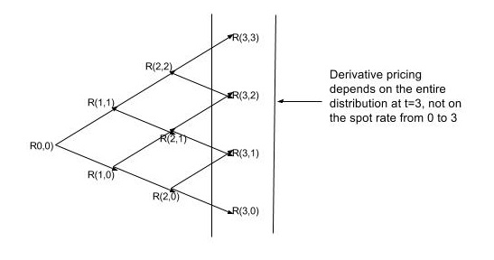
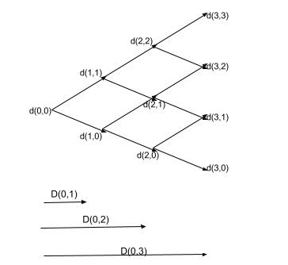
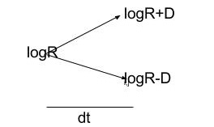
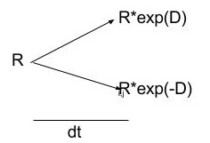
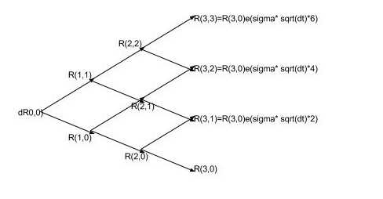

\documentclass{article}
\usepackage{amsmath}
\usepackage{txfonts}
Need for modelling short interest rate process
- interest products depend on probability distribution of short rate, as shown in the below picture
- instaneous short rate r(t) is defined as the rate in [ t, t+dt] as measured at t=0
- discrete time proxy R(t) , rate between t , t+\Delta t is used here throughout

Discount rate tree
in the following section we will work with discount rate tree, instead of the interest rate tree. they are related directly , as specified below.

Forward Induction thru the tree
Goal is to be able express expected value 1 dollar receivable at t=i, as calculated from t=0, as a recursive expression
- $D_{0,i}=\text{ risk free spot rate for time=i} $
- $d_{i,j} =\text{riskfree forward discount rate from period i to i+1, if node(i,j) was reached , and applicable to both paths (i+1,j+1) and ( i+1, j ).}$
- forward short rate R(i,j) as $d_{i,j} = \frac{1}{1+R_{i,j}\Delta t}$
- $G_{i,j} = \text{Expected value at t=0 , of 1 dollar payable at period t=i, and if discount rate at period i reaches node j.} $
- $G_{0,0} = 1 \text{, by definition, and d00 is known}$
High level goal is to back out the short interest rates $R_{i,j}$ by equating observed spot rate with G over all j's at t=i
i,e
$$
D_{0,i}=\sum_{j=0}^{j=i}G_{i,j}
\label{ref1}
$$
Assuming paths (i,j) -> (i+1,j+1) AND (i,j) ->(i+1,j ) have equal probablity.
$G_{1,0} = \frac12d_{0,0}G_{0,0}$
$G_{1,1} = \frac12d_{0,0}G_{0,0}$
Continuing this way, we can recursively define $G_{i,j}$ by examining two paths ( at most ) that lead into (i,j)
$G_{2,0}=\text{ disc factor from 1,0 to 2,0 * prob of path(1,0->2,0) * } G_{1,0}$
$G_{2,1} = \text{ disc factor from 1,0 to 2,1 * prob of path (1,0->2,1 )*} G_{1,0} +
\text{ disc factor from 1,1 to 2,1 * prob of path (1,1->2,1 )*} G_{1,1}$
$=\frac12d_{1,0}G_{1,0} + \frac12d_{1,1}G_{1,1}$
In general,
\begin{align}
G_{i,0} & = \frac12d_{i-1,0}G_{i-1,0} \\
G_{i,i} &= \frac12d_{i-1, i-1}G_{i-1,i-1} \\
G_{i,j} &= \frac12d_{i-1, j-1}G_{i-1,j-1} + \frac12d_{i-1,j}G_{i-1,j} \text{ , for j =1..i-1 }
\end{align}
using \eqref{ref1} with above eqns
\[
D_{0,i}=
\frac12 d_{i-1,0}G_{i-1,0} +
\sum_{j=1}^{j=i-1} \left(\frac12d_{i-1,j-1}G_{i-1,j-1} + \frac12d_{i-1,j}G_{i-1,j} \right) +
\frac12 d_{i-1,j-1}G_{i-1,j-1}
\label{refDiscRecurse}
\]
Model of short rate
lognormal model for short rate , ie rate R(t) from t=t to t=t+$\Delta t$ , as observed at t=0, is expressed as
$$ d\log R(t) = ( \theta (t) - a \log R(t) ) \Delta t + \sigma ( t) dz, a>0$$
Intutive interpretation
- when R is low theta has a positive effect on d logR, therefore increasing it, and increasing R
- when R is high alogR term prevails , and dlogR is negative, therefore R goes down.
- at time $t+ \Delta t $ , $logR(t + \Delta t ) $ follows a distribution with a mean $(\theta (t) - a\log R)\Delta t $, and variance $\sigma(t)^2 \Delta t$
below is a very trivial sample simulation, which attempts to preserve the mean and variance


\begin{align}
E[\log R(t+\Delta t)] &= \frac12(\log R(t) + D) + \frac12(\log R(t)- D) \\
Var(\log {R (t+\Delta t)} ) &=E[\log {R(t+\Delta t)}^2] - {(E[\log R(t+\Delta t)])}^2 \\
& = \frac12{(\log{R(t) + D} )}^2 + \frac12{(\log{R(t) - D} )}^2 - {(E[\log R(t+\Delta t)])}^2= {\sigma (t) }^2 \Delta t\\
\end{align}
Solving,
$a=-\frac{1}{\Delta t} $
$D= \sigma (t) \sqrt {\Delta t}$
therefore, the gap between each successive node at each time =i is 2D. , and following series of short rates will preversev mean and variance at time=t+$\Delta t$
This simplifies things a lot, because at every time step we will need to find $R_{i,0}$. $$R_{i,j} = R_{i,0}e^{2\sigma_i j\sqrt{\Delta t} } \label{refIntrate} $$

Using short rate model in forward induction to step thru the rarte tree and generate short rates.
Using \eqref{refDiscRecurse} and \eqref{refIntrate}
\begin{align}
D_{0,i} &=
\frac12 \frac{1}{1+R_{i-1,0}\Delta t}G_{i-1,0} +
\sum_{j=1}^{j=i-1} \left(\frac12\frac{1}{1+R_{i-1,j-1}\Delta t}G_{i-1,j-1} + \frac12\frac{1}{1+R_{i-1,j}\Delta t}G_{i-1,j} \right) +
\frac12 \frac{1}{1+R_{i-1,i-1}\Delta t}G_{i-1,i-1} \\
&=\frac12 \frac{1}{1+R_{i-1,0}\Delta t}G_{i-1,0} +
\sum_{j=1}^{j=i-1} \left(\frac12\frac{1}{1+R_{i-1,0}e^{2(j-1)\sigma_{i-1}\sqrt\Delta t}\Delta t}G_{i-1,j-1} + \frac12\frac{1}{1+R_{i-1,0}e^{2j\sigma_{i-1}\sqrt\Delta t}\Delta t}G_{i-1,j} \right) +
\frac12 \frac{1}{1+R_{i-1,0}e^{2(i-1)\sigma_{i-1}\sqrt\Delta t}\Delta t}G_{i-1,i-1} \\
\label{refEqnToSolve}
\end{align}
Additionally , $R_{0,0}$, $G_{1,0}$ and $G_{1,1}$ are known.
Above eqn is recursively solved to find all the $R_{i,j}$s. Process to solve this numerically( one way is using Newton-Raphson) is not described here.